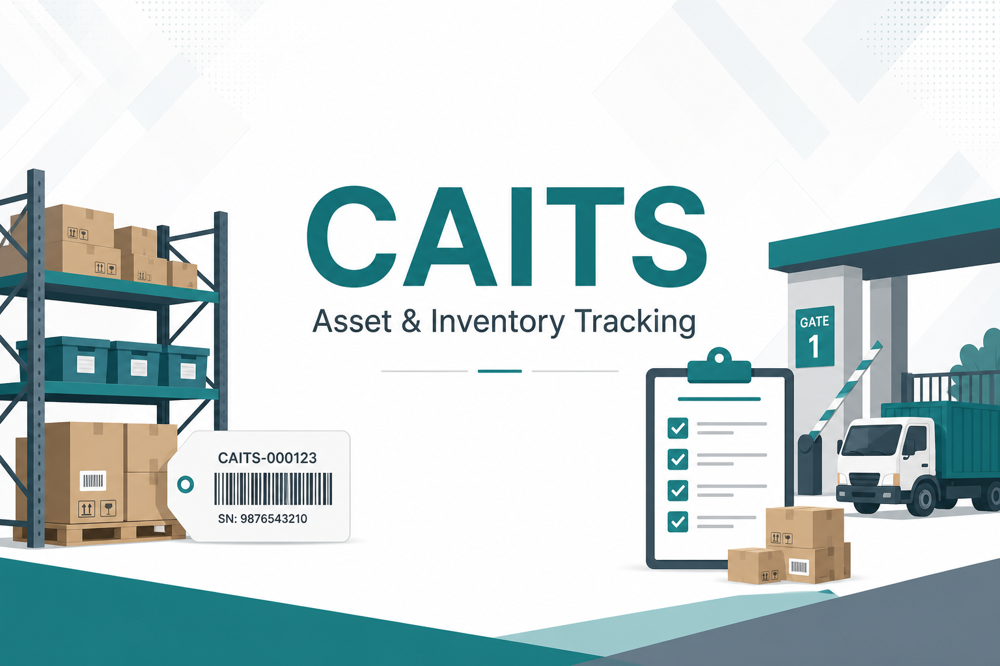
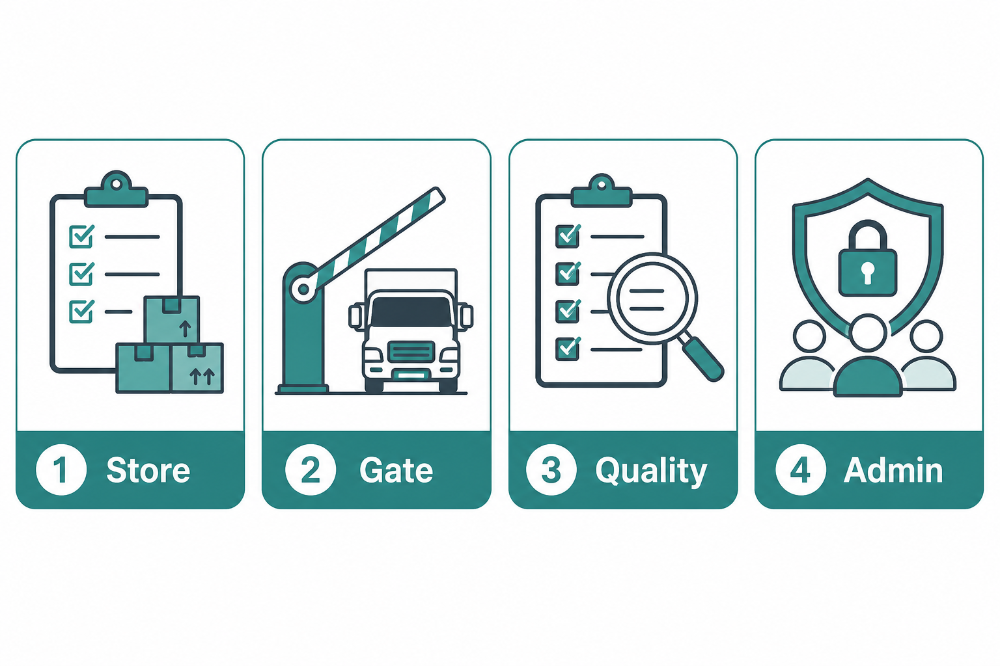
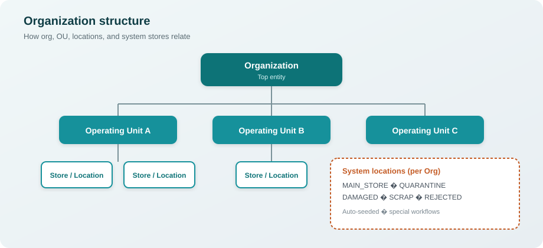
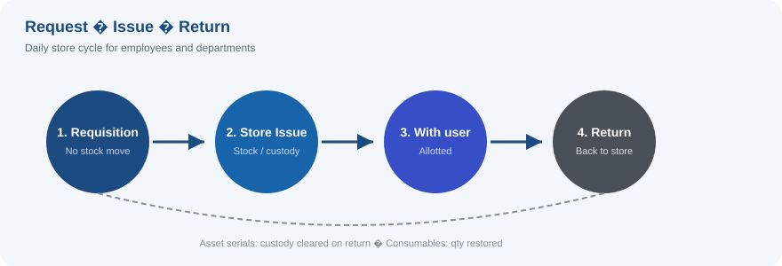
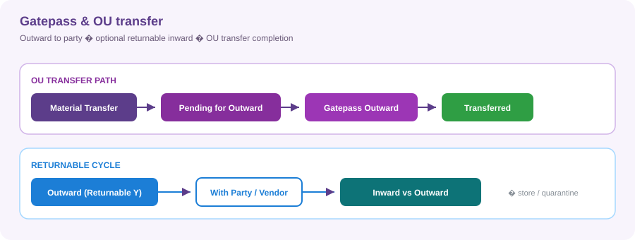

CAITS (Centralized Asset and Inventory Tracking System) helps teams manage inventory and serialized assets across organizations, operating units, and store locations — from receipt and inspection through issue, transfer, return, and gatepass.
| 🖥️ Frontend | React + Vite (http://localhost:5173) |
| ⚙️ Backend | Spring Boot + JWT (http://localhost:8085/api/v1) |
| 🗄️ Database | PostgreSQL schema caits_local |
This guide focuses on flows and functionality. For schema/API depth, see
CAITS_FULL_SYSTEM_DOCUMENTATION.md.

| Icon | Role area | Typical use |
|---|---|---|
| 📦 | Store / inventory | Opening stock, GRN, issue, transfer, return, stock ledgers |
| 🚧 | Gate / logistics | Gatepass inward & outward, returnable materials |
| 🔍 | Quality | Inspection approval (quarantine → home store / rejected) |
| 🛡️ | Admin | Masters, roles, users, location access, exceptions |
Access is controlled by Role & Menu Mapping (view / create / edit / delete / approve / print / export), plus optional User Access Exceptions and OU / location scope on the user.
flowchart LR
U[👤 User login] --> R[🎭 Role]
R --> M[📋 Menu ACL]
U --> S[📍 OU / Location scope]
M --> A[Allowed screens & actions]
S --> A
| Type | Tracking | Typical behaviour |
|---|---|---|
| 🖥 Asset | Often serialized (1 unit = 1 serial) | Serial on receive/issue/return/outward; custody on BLS |
| 📦 Consumable | Qty / optional batch | Stock quantity increases/decreases at locations |
flowchart TB
subgraph Stock["📊 Stock register"]
S1["Item + Location (+ batch)"]
S2["Quantity on hand"]
end
subgraph BLS["🏷️ BLS register"]
B1["Serial / lot / unit"]
B2["Location · Issued-to · IP/MAC"]
end
Stock -. qty view .-> Ops[Transactions]
BLS -. unit view .-> Ops
| Register | What it answers |
|---|---|
Stock (inv_stock_mst) |
How much is at a location? |
BLS (inv_bls_mst) |
Which unit / serial is where, and who holds it? |

| System location | Purpose |
|---|---|
| 🏪 MAIN_STORE | Default system store |
| ⏸️ QUARANTINE | Inspection-needed receipts wait here |
| ⚠️ DAMAGED | Damaged material |
| 🗑️ SCRAP | Scrap |
| ❌ REJECTED | Rejected at GRN or after failed inspection |
Operational Locations belong to Operating Units and are used for day-to-day store work.

On Item Master, set Inspection Needed. On GRN / Gatepass Inward submit:

| Action | Result |
|---|---|
| 💾 Save Draft | Editable draft / pending |
| ✅ Submit | Posts stock (where applicable) and finalizes |
Document numbers: PREFIX-YEAR-NNNN — e.g. GRN-2026-0001, GPO-2026-0003.
Set masters in this order so transactions have the data they need:
flowchart LR
A[1️⃣ Units] --> B[2️⃣ Categories]
B --> C[3️⃣ General Master]
C --> D[4️⃣ Org → OU → Location]
D --> E[5️⃣ Items]
E --> F[6️⃣ Vendors]
F --> G[7️⃣ Roles]
G --> H[8️⃣ Employees]
H --> I[9️⃣ Users]
I --> J[🔟 Exceptions]
| Step | Master | Why |
|---|---|---|
| 1️⃣ | Unit Master | UOMs |
| 2️⃣ | Inventory Category / Sub-Category | Item classification |
| 3️⃣ | General Type / General Master | Lookups (returnable, purposes…) |
| 4️⃣ | Organization → OU → Location | Structure + system stores |
| 5️⃣ | Item Master | Type, serial/batch, home store, inspection |
| 6️⃣ | Vendor / Party | Suppliers & parties |
| 7️⃣ | Role & Menu Mapping | Screen permissions |
| 8️⃣ | Employee / Department | People & teams |
| 9️⃣ | User Access Mapping | Login, role, scope |
| 🔟 | User Access Exception | Optional overrides |

flowchart TD
OS[Opening Stock] --> ONHAND[Stock / BLS on hand]
GRN[GRN] --> ONHAND
GPI[Gatepass Inward] --> ONHAND
ONHAND -->|Inspection needed| Q[Quarantine]
Q --> IAPR[Inspection Approval]
IAPR -->|Approve| HOME[Home store]
IAPR -->|Reject| REJ[Rejected]
ONHAND --> SR[Requisition]
SR --> ISS[Store Issue]
ISS --> RTN[Material Return]
ONHAND --> TRF[Material Transfer]
TRF -->|OU| PFO[Pending for Outward]
PFO --> GPO[Gatepass Outward]
GPO -->|Returnable| GPI2[Gatepass Inward]
Purpose: Seed opening balances.
| Step | Action |
|---|---|
| 1️⃣ | Create entry: organization, store, date, item lines |
| 2️⃣ | Assets → serials · Consumables → qty (+ optional batch) |
| 3️⃣ | Submit → stock increases; BLS created/resolved |
⚠️ Duplicate serials already in the system are rejected (first-time inbound).
Purpose: Receive material from a supplier / vendor.
| Step | Action |
|---|---|
| 1️⃣ | Header: supplier, invoice/PO refs, store, inspector if needed |
| 2️⃣ | Lines: received / accepted / rejected qty; serials for assets |
| 3️⃣ | Submit |
Where accepted / rejected qty goes:
flowchart LR
SUB[Submit GRN] --> REJ[❌ Rejected qty → Rejected store]
SUB --> ACC{Accepted?}
ACC -->|Inspection needed| Q[⏸️ Quarantine + IAPR]
ACC -->|Normal| ST[🏪 GRN / line store]
| Qty | Destination |
|---|---|
| Rejected | Rejected system store |
| Accepted + Inspection Needed | Quarantine (+ pending Inspection Approval) |
| Accepted otherwise | GRN / line store |
Requires: Inspected By when any accepted line needs inspection; item must have a home store.
Purpose: Clear quarantine after GRN or Gatepass Inward.
| Step | Action |
|---|---|
| 1️⃣ | System creates Pending approval linked to source document |
| 2️⃣ | Assigned inspector opens Inspection Approvals |
| 3️⃣ | Approve → Quarantine → home store |
| 4️⃣ | Reject → Quarantine → Rejected store |
🔐 Only the assigned inspector (or ADMIN) may approve/reject.
Purpose: Request material — does not move stock.
| Step | Action |
|---|---|
| 1️⃣ | Return-from type: Employee or Department |
| 2️⃣ | Select items/locations with available stock |
| 3️⃣ | Submit → status Requested |
Downstream: Store Issue picks Requested requisitions → after issue, requisition becomes Issued.

Purpose: Issue material from a store against a requisition.
| Step | Action |
|---|---|
| 1️⃣ | New Issue → pick a Requested requisition |
| 2️⃣ | Confirm From Location, Issued To, To Location |
| 3️⃣ | Lines: issue qty; assets need free serials at From Location |
| 4️⃣ | Submit → Issued |
| Item type | On submit |
|---|---|
| 📦 Consumables | Quantity leaves the issuing store |
| 🖥 Assets (same store) | On-hand qty often unchanged; BLS issued-to employee |
| 📍 Different destination | Stock moves From → To |
Sidebar highlights Store Issue for all /transactions/issues/* routes.
Purpose: Move stock between locations.
| Type | Behaviour |
|---|---|
| 🏠 INTERNAL | Submit → stock moves → Transferred |
| 🏢 OU | Submit → stock moves → Pending for Outward until Gatepass Outward → Transferred |
sequenceDiagram
participant User
participant Transfer as Material Transfer
participant Stock
participant Gate as Gatepass Outward
User->>Transfer: Submit OU transfer
Transfer->>Stock: Move qty / BLS
Transfer-->>User: Pending for Outward
User->>Gate: Complete outward
Gate-->>Transfer: Status → Transferred
Note over Gate: Gate docs only — no second stock post
Rules:
Purpose: Return allotted material to store.
| Step | Action |
|---|---|
| 1️⃣ | Return From: Employee or Department |
| 2️⃣ | Pick allotted item (and serial for assets) |
| 3️⃣ | Return-to store = Item Master home store |
| 4️⃣ | Submit → Returned; stock back; BLS custody cleared |
One menu covers Outward and Inward.

| Mode | Purpose |
|---|---|
| New / standalone | From a system location to a vendor/party; Returnable Y/N |
| Against transfer | Completes OU transfer; party/store from transfer |
| Rule | Detail |
|---|---|
| ✅ Mandatory | Vendor / Party / Customer (free text) |
| ✨ Prefill | Party can come from source GRN / Opening Stock vendor |
| 🚫 Block | Inspection-needed items from Quarantine / Damaged / Scrap until inspected |
| Mode | Purpose |
|---|---|
| Against Returnable Outward | Bring returnable material back |
| New Inward | Fresh gate receipt from Item Master |
| Rule | Detail |
|---|---|
| ✅ Mandatory | Vendor / Party / Customer · Serial for assets |
| 👤 Inspector list | Employees who have a role assigned |
Receive location:
| Situation | Location |
|---|---|
| New inward, no inspection | Item home store |
| Inspection needed (new or returnable) | Quarantine (+ Inspection Approval) |
| Returnable, no inspection | Outward system store |
| Icon | Screen | What you get |
|---|---|---|
| 🏠 | Dashboard | KPIs, pending work, low stock, recent activity |
| 📒 | Stock Ledger | Opening / receipts / issues / closing; expand units |
| 📜 | Log Report | Transaction activity (filters include serial) |
| 👤 | Stock Owner Report | Where stock sits and who holds custody |
| 🗺️ | Asset Movement Register | How assets moved across locations/custodians |
| 📈 | Item Ledger | Running balance by document for an item |
flowchart LR
D[Dashboard] --> P[Pending work]
D --> L[Low stock]
R1[Stock Ledger] --> Bal[Balances]
R2[Stock Owner] --> Cust[Custody]
R3[Asset Movement] --> Trail[Movement trail]
| Icon | Topic | Rule |
|---|---|---|
| 🔢 | Serials | Required for serialized/asset lines on receive, issue, return, gatepass |
| 🚫 | Duplicate serial | Blocked on GRN / Opening Stock; Return & GPI reuse BLS |
| ⏸️ | Inspection | Quarantine → Inspection Approval → Home or Rejected |
| ✍️ | Gatepass party | Mandatory on inward and outward |
| 🏢 | OU transfer | Needs Gatepass Outward to finish |
| 🔁 | Returnable outward | Paired later with Gatepass Inward |
| 📍 | Location access | Users only see/post to allowed OUs/locations (ADMIN exempt) |
| 💾 | Drafts | Editable until submitted |
Follow this path for a short end-to-end demo:
flowchart LR
M[1 Masters] --> R[2 Receive]
R --> Q[3 Inspect]
Q --> I[4 Req + Issue]
I --> T[5 Return]
T --> G[6 Transfer + GP]
G --> V[7 Verify reports]
| Step | What to do |
|---|---|
| 1️⃣ | Masters — org, OU, location, units, one asset + one consumable, vendor, employee with role + login |
| 2️⃣ | Opening Stock or GRN — receive asset with serial and consumable qty |
| 3️⃣ | If inspection-needed — Inspection Approval → home store |
| 4️⃣ | Requisition → Store Issue (pick serial for asset) |
| 5️⃣ | Material Return — return the allotted asset |
| 6️⃣ | Transfer (OU) → Gatepass Outward (returnable) → Gatepass Inward |
| 7️⃣ | Open Stock Ledger / Stock Owner / Dashboard to verify |
| File | Content |
|---|---|
CAITS_PRODUCT_FUNCTIONAL_GUIDE.pdf |
Printable PDF (diagrams + images) |
CAITS_PRODUCT_FUNCTIONAL_GUIDE.md |
This guide (flows, diagrams, images) |
images/ |
Cover, role art, and SVG flow diagrams |
CAITS_FULL_SYSTEM_DOCUMENTATION.md |
Deeper technical / schema write-up |
DEMO_UI_WORKFLOW_RUN.md |
Demo UI workflow notes |
../db_approach/CAIMS_Relational_Schema.md |
Relational schema notes |
../README.md |
Project entry / run instructions |
| Viewer | What works best |
|---|---|
| GitHub / GitLab | PNGs, SVGs, and Mermaid diagrams |
| VS Code / Cursor | Open preview (Markdown: Open Preview) for Mermaid + images |
| PDF export | Use a Markdown→PDF tool that supports Mermaid (or rely on the SVG images) |
Aligned with current CAITS behaviour (masters, transactions, quarantine/inspection, gatepass, reports). Update this file and docs/images/ when major workflows change.